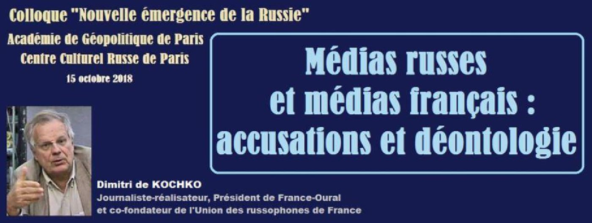
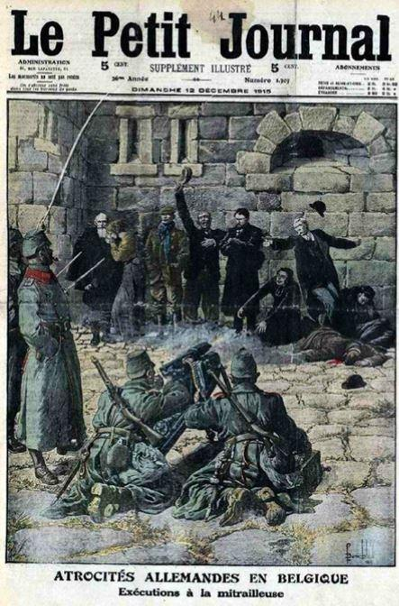
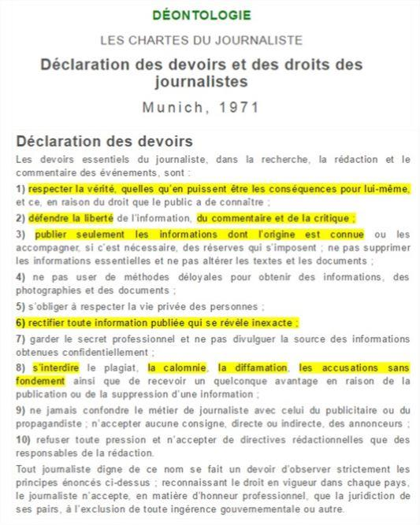
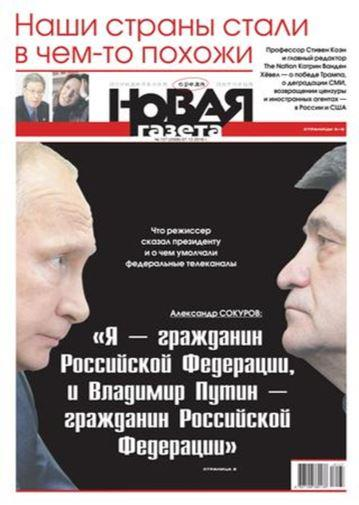
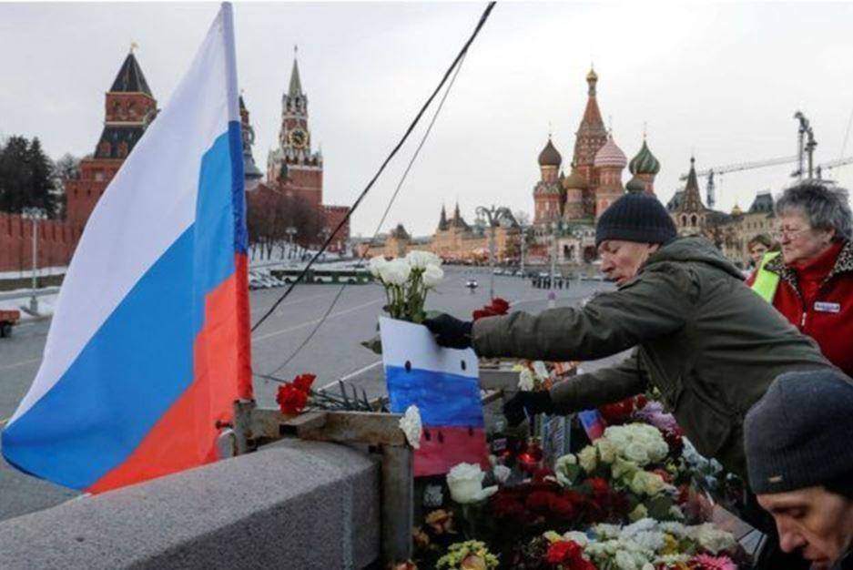
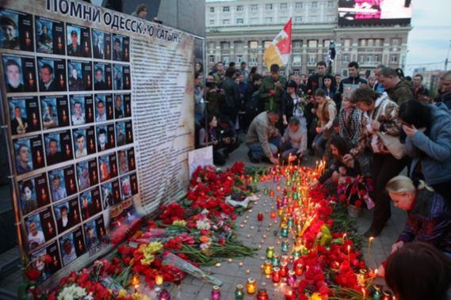
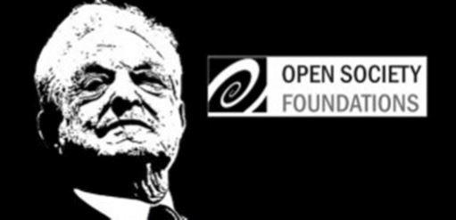
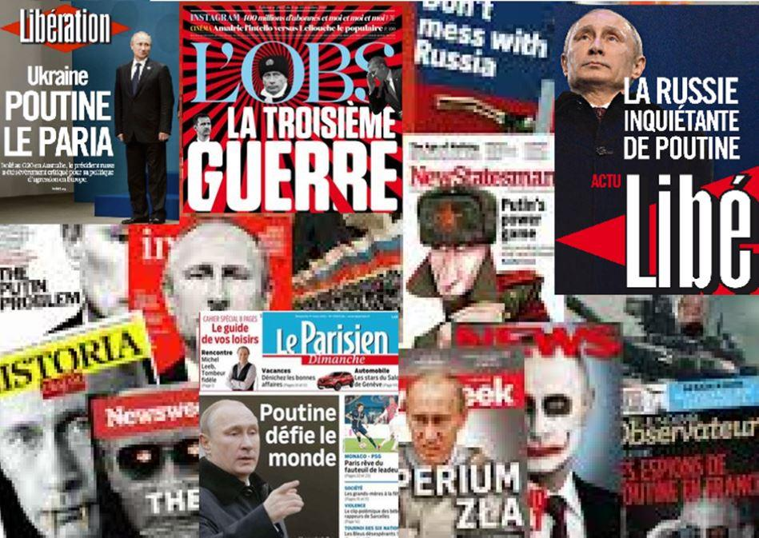

Médias russes et médias français : accusations et déontologie
par Dimitri de KOCHKO

« Méthode » avait publié dans le précédent numéro un dossier spécial en collaboration avec l’Académie géopolitique de Paris sur le colloque « Nouvelle émergence de la Russie ». Notre ami Dimitri de Kochko nous ayant fait parvenir son intervention après bouclage, nous ne saurions vous priver de son analyse sur les médias russes et français.
Mon sujet envisage et les médias en RUSSIE et les médias français, et la déontologie et les accusations réciproques. Pour faire court, on va comparer rapidement puis envisager les différents procédés de la russophobie médiatique chez nous.
La déontologie, je vais en dire un petit mot, c’est que, en matière de presse, la déontologie est quelque chose d’important pour nous les Français. C’est que c’est nous qui avons, nous les journalistes français je veux dire, qui avons fait la première charte de déontologie du journalisme, cela date de 1918, jusqu’au lendemain de la Première guerre mondiale, et là on est de l’actualité aussi, et c’est compte tenu de tous les abus qui avaient pu être constatés dans la description de la Première guerre mondiale. Notamment sur des articles avec des titres comme : « Les balles allemandes ne tuent pas ! », « Les cadavres français puent moins que les cadavres allemands ! » etcétéra etcétéra, toutes les choses qu’on a pu lire pendant cette Première guerre mondiale, et où on a eu notamment tendance à confondre la plume et le fusil.
Cette Charte de déontologie a été actualisée notamment avec l’extension de l’internet il y a deux ans ou trois ans de ça, par le SNJ qui était déjà l’auteur de la Première Charte de Déontologie et qui fête ses cent ans, il y a une exposition à l’Hôtel de Ville de Paris, si vous voulez, sur le sujet. Une charte de déontologie au niveau mondial a été adoptée à Münich en 1971, donc c’est un aspect important. Il y a des règles de conduite pour des journalistes, et notamment des règles de conduite qui visent à essayer d’éviter de confondre l’information et la communication. L'information n'exclut pas l'analyse et le point de vue. Mais cela doit être clairement exprimé.
J'y reviendrai, en tout cas c’est un aspect qui est malheureusement bien douloureux pour nous aujourd’hui, compte tenu de ce qui se passe dans la presse. Alors, pour ne pas parler et de la presse russe et de la presse française en exposant chacune, on va regarder ce qui est commun aux deux, et ce qui en quelque sorte réunit un peu les deux, mais aussi ce qui les différencie. La première chose qui est commune, eh bien ce sont les accusations réciproques : ça on peut dire qu’aussi bien du côté russe on accuse les médias français, et du côté français on accuse les média russes. Les deux aujourd'hui choisissent plutôt les mauvaises nouvelles chez l'autre. Avant, la presse russe le faisait moins systématiquement, contrairement à la presse soviétique.
Commençons par les accusations côté français, ça vous les entendez tous les jours, vous appuyez sur n’importe quelle touche de votre télécommande télévisuelle, vous les trouvez, la radio : vous l’aurez – essentiellement d’ailleurs malheureusement les radios d’État, on l’appelle le Service Public, pour ne pas dire « d’État », en FRANCE, mais bon, il n’empêche que c’est un peu ça quand même, et c’est assez étonnant qu’il y ait un tel parti pris, justement, sur des média d’État. Donc on reproche à la presse russe, en gros, et en général à la société russe, de n’avoir aucune liberté, d’avoir une presse totalement monolithique, de ne pas avoir d’expression du tout en RUSSIE en matière de presse et en général. Quiconque s’est rendu en Russie ces derniers temps en comprenant un minimum de russe ou en lisant les publications en anglais à Moscou a pu se rendre compte à quel point ces affirmations manquent pour le moins de nuances.
En RUSSIE, il y a évidemment tout comme ici, plusieurs formes de presse, il y a la télévision, il y a la radio, il y a les journaux même s’ils connaissent une crise qui est la même que celle qui existe dans les autres pays compte tenu de la concurrence de l’internet. Et bien sûr, il y a à côté de l’empire télévisuel, toute la toile de l'internet.
Il y a un domaine audiovisuel public (nommé VGTRK), contrôlé et financé par l’État. Mais il existe des télévisions privées abondantes, il y a des télévisions régionales et locales qui elles ont une liberté de programmation qui est beaucoup plus large ou parfois plus restreintes. Souvent en fonction des personnalités et influences locales.
Tenons-nous-en aux aspects informations. Sur les télévisions d’État, évidemment dans l’ensemble elles ne sont pas antis gouvernementales. Et c'est un euphémisme. C’est évident mais jusqu’à un certain point. Vous avez notamment des TALK-SHOWS, comme on dit, des débats qui ont un franc succès auprès des téléspectateurs, ils sont très connus en RUSSIE. À chaque fois – à chaque fois - il y a au moins un ou deux représentants soit de l’OTAN, soit de l’UKRAINE kievienne, puisqu’en ce moment c’est quand même un problème très douloureux et très délicat en RUSSIE, soit de la POLOGNE, où vous entendez des choses d’hostilités par rapport à la RUSSIE, qui dépassent ce que nous entendons sur nos ondes à nous. Bien sûr, c’est de la politique spectacle mais chez nous on n’a même pas ça.
D’autre part, il est incontestable que dans la presse, il existe des journaux d’opposition. « Novaya Gazeta », dont vous entendez toujours parler qui est toujours citée dans nos médias, parfois en boucle, après qu'elle ait repris des "informations" occidentales de diverses sources, y compris donc d’agences spécialisées dans la désinformation. Des journaux à orientation économique comme RBK ou Vedomosti ne sont pas du tout tendres avec le pouvoir.
Il y a aussi une presse d'opposition nationaliste. Une chaîne de télévision « dojd » n'existe que sur internet - elle serait comparable de ce point de vue et seulement de ce point de vue car elle est pro otanienne, à télé Liberté - chez nous.
Il y a une radio qui s’appelle Écho de Moscou, financée par Gazprom, qui est très écoutée par une semi-intelligentsia et une jeunesse plutôt dorée des capitales et des grandes villes. L'audience ne va pas beaucoup plus loin, dans la mesure où elle ne fait que répéter les media occidentaux et a une tendance à parler par slogans hostiles ou haineux systématiquement. Ces médias sont tous en libre accès dans toute la RUSSIE, en télévision, radio ou sur internet. C'est très différent de ce qui se passe dans notre grande UKRAINE démocratique européenne et patati et patata – je vous renvoie aux qualificatifs des radios françaises – où les télévisions russes sont interdites, où même leurs correspondants sont arrêtés et emprisonnés parce que journalistes sans que nos défenseurs des droits de la presse ne protestent ! [actuellement Kirill Vichynski de RIA). Même deux télévisions qui avaient une relative liberté de ton, mais qui appartenaient à des oligarques qui déplaisaient à l’oligarque central, risquent d’être fermées maintenant. Dans les pays baltes, les télévisions russes sont interdites, et même les accès par internet ne sont pas faciles du tout. En Géorgie et en Moldavie, l’accès à l’information de Russie est limitée aussi ou l’a été.
Donc on a là de petites différences : on a quand même visiblement des jugements à double standard, il faut bien le dire.
Contrairement à ce qui est martelé ici, il y a une opposition en Russie. C’est un autre débat assez long car entre « l’établissement » représenté par le parti au pouvoir Russie Unie et les différentes oppositions parlementaires ou extra-parlementaire il y a multiples nuances qui ne tiennent pas toutes au pouvoir. Et les médias le reflètent forcément. Il y a eu des candidats aux élections présidentielles qui représentaient à peu près tous les secteurs. On a parlé tout à l’heure de Madame Sobchiak : elle avait dans son programme notamment d’offrir la Crimée à l’Ukraine, comme l’avait fait Khrouchtchev en 1954. Elle n’a pas reçu énormément de voix. Il y a eu deux autres partis qui étaient carrément d’une opposition féroce, ils n’ont pas eu beaucoup de voix, et ce n’est pas parce que les élections n’étaient pas régulières, ce n’est pas vrai, nous avons eu le témoignage de monsieur Jacques Myard et c’est effectivement comme ça que ça s’est passé. J'ai été voir ces élections, et je peux vous dire qu’elles ont été totalement honnêtes, et de ce point de vue-là d’ailleurs, les Russes enfin Poutine en tout cas a pu remercier les gouvernants anglais pour l’affaire Skripal, parce que la participation aux élections présidentielles a sans doute été de 10% plus élevée, grâce à l’affaire Skripal. Le réflexe de « Patrie en danger » a beaucoup joué auprès des Russes, compte tenu de ce montage-là.
Maintenant pour ce qui est des accusations des Russes contre la presse française, ce sont souvent des accusations de fond. Il y a notamment un débat « sociétal » sur des valeurs. Il est difficile de dire où il mène et quel est son véritable impact. Plus immédiat et fondé, à mon sens, sont les accusations sur la russophobie constante de nos médias. Et là je vais développer alors ce que disait l’orateur précédent, c'est-à-dire énumérer quelques procédés utilisés dans notre presse malheureusement.
Ce sont :
- les amalgames, des rapprochements douteux (le plus fréquent c’est Poutine-Staline, la Russie/l’Union soviétique) – on mélange tout, ça fait des rapprochements ou des amalgames. On peut le faire avec des mots mais aussi des photos ou la vidéo : le slogan génial de Paris-Match : le poids des mots, le choc des photos. Par exemple l’assassinat de Boris Nemtsov – vous savez l’opposant qui avait été Premier ministre enfin ou presque Premier ministre sous ELTSINE qui a été assassiné il y a quelques années à la veille d’une manifestation d’opposition qui ne semblait pas rencontrer le succès espéré. Comme par hasard juste devant le Kremlin, de façon à ce que toutes les images aient toujours le Kremlin en fonds ou arrière plan….
- les silences, la dissimulation : Les médias russes ont annoncé à l’automne 2018, que plusieurs dizaines de Géorgiens étaient tombés malades en raison d’une bavure d’un laboratoire de recherche américain de guerre bactériologique situé en Géorgie. Ce programme de recherche militaire, interdit par tous les traités internationaux sur la guerre bactériologique, a déjà été signalé. Il vise à trouver des molécules destructrices qui n’affecteraient que les Russes ou les nationalités des anciennes républiques de l'URSS, notamment d’Asie centrale. On essaie de chercher des particularités de l'ADN ou du génome de ces populations afin de pouvoir éliminer la population locale sans nuire aux troupes américaines et otaniennes qui auraient à intervenir en cas de conflit… C’est une information qui vaut ce qu’elle vaut. Mais elle est grave. Elle est « sourcée » et mériterait une enquête de nos fameux journalistes ou pseudo-journalistes d’investigation. Eh bien non. Pas un mot dans notre presse … je suis sûr que la moitié d'entre vous ne le savez même pas pourtant vous êtes spécialisés.
Le numéro du missile BOUK qui a abattu en juillet 2015 le MH-17, le Boeing malaisien au-dessus du Donbass a été tracé et donné par les Russes après que les enquêteurs nééerlandais ont montré les débris du missile avec le numéro. Les Russes ont retrouvé tous les documents techniques et ont indiqué que ce missile avait été livré en Ukraine en 1986 et qu’il y était resté depuis. Ils en concluent tout naturellement que ce sont bien les Ukrainiens qui ont abattu le Boeing. La question étant de savoir si c’est par erreur (comme déjà une fois il y a quelques années) ou délibérément pour accuser la Russie et les rebelles de l’est. Chez nous pas un mot sur cette preuve autrement plus probante que les accusations contre la Russie appuyées notamment sur des vidéos truquées colportées par une « association », créée par les services occidentaux et malheureusement reprise « sans voir » par l’ensemble de nos médias.
Je pourrais aussi citer le massacre d'Odessa en mai 2014. Près de 50 morts officiellement brûlés vifs ou lynchés par des hordes fanatiques à référence nazie, lorsqu’ils tentaient d’échapper au brasier. Très peu dans notre presse. Et souvent totalement déformé et biaisé. Imaginons que ça se soit passé aux États-Unis ou … en Russie !
Un an plus tard un journaliste documentariste honnête, fait documentaire dessus, en disant « J'ai un scoop ! Il y a eu un massacre à ODESSA ! ». Ça faisait un an qu'il avait eu lieu mais effectivement, même des journalistes n’en avaient pas entendu parler. Eh bien même ce documentaire projeté à 23h30 sur le programme crypté de Canal+ n’a pas plu à nos censeurs. L'Ambassade d'Ukraine a écrit à Bolloré et a demandé à l'Élysée d'interdire le documentaire qui passait sur la chaîne payante ! M. Bolloré a résisté et défendu la liberté d’information et son honneur.
Chaque année ou presque, l’ONU vote contre la glorification du nazisme et les commémorations nazies. De telles commémorations ont lieu en Lettonie, en Estonie et en UKRAINE. Eh bien malheureusement, les États-Unis, le Canada et l’Ukraine votent contre la résolution condamnant la glorification du nazisme ! L'Union européenne s'abstient ! On ne le dit pas dans notre presse.
Il y a aussi les gaz chimiques, les provocations chimiques, en Syrie par exemple, qui permettent d’accuser de bombardements gouvernementaux inexistants mais qui justifient n’importe quoi. Là aussi le parti-pris de nos médias est accablant. Les avertissements, les contre preuves et témoignages fournis par les Russes et les Syriens ne sont même pas rapportés.
- Les déformations et création de « héros ». C’est le cas actuellement avec un monsieur nommé Oleg Sentsov. Il est présenté comme un opposant russe, même sur l'Hôtel de Ville de Paris, on dit qu’il est emprisonné en raison d’une atteinte à la liberté d’expression. En fait, c'est un monsieur qui a été trouvé quand même avec des explosifs, qui a fichu le feu au siège d’un parti politique en Crimée. Il peut sans doute le faire et seule l’histoire qualifiera la nature de tels gestes, en fonction de qui remporte la victoire finale. Mais enfin, aujourd’hui, sans juger du bien fondé de telles actions qu’il faut bien reconnaître comme violentes voire terroristes, on ne peut arguer seulement de liberté d’expression. C'est comme si on jugeait la politique intérieure française, et la liberté d'expression en France, à partir du sort judiciaire d’un activiste du FLNC par exemple. Donc ça me paraît quelque peu déséquilibré là aussi.
- La déformation des citations est une constante. L'une des plus connues c'est Poutine sur l'URSS, on y a fait allusion tout à l'heure. Poutine a dit plusieurs fois, notamment devant un public de Russes qui se sont retrouvés « à l’étranger » après la dissolution unilatérale de l’URSS, que l’implosion de l’URSS était effectivement un drame du 20e Siècle. Il n'a jamais dit qu'il voulait rétablir l'URSS. Il a même dit le contraire. En plagiant Churchill, il a dit « Ceux qui veulent rétablir l'URSS n'ont pas de tête ! »
- L'utilisation et la création de sources. C'est très important. J'ai fait allusion à la vidéo truquée montrant un camion qui avait transporté des missiles Bouks en liaison avec le Boeing MH17 abattu. Une « association » créée de toutes pièces diffuse des « informations » reprises dans toute la presse qui ne s’interroge pas sur l’authenticité des pièces ni sur l’origine de la source.
Les exemples de telles « ONG » abondent. Le plus souvent financées par des Fondations comme celle de George Soros, open society, ou democratic endowment ou encore l’USIS directement.
Ces « sources » vous donnent des « faits », souvent soufflés par des services spécialisés, qui sont ensuite répétés, et qui à force d'être répétés et d'être repris dans les backgrounds, deviennent réalité. Parfois des publications honorables sont ainsi manipulées pour pouvoir faire un lâcher de désinformation en lui donnant un aspect crédible au départ avant de le répéter à l’envi afin qu’il devienne « vrai » et « évident ». C’est ainsi que le Wall Street Journal a été intoxiqué pour « « expliquer » que l'Irak avait des armes de destruction massive. Après, cela Powell a pu brandir son éprouvette de bicarbonate de soude à l’ONU.
Par manque de temps, et en fonction de ce que veulent les rédactions en chef, les journalistes tombent dans le panneau ou ne veulent pas chercher d’embrouilles, compte tenu de la précarité de la profession.
La personnalisation pour créer « un méchant », tellement plus facile pour manipuler les foules ensuite ... la démonisation des Russes, à laquelle s’emploie Hollywood depuis des années, voire des décennies. Aujourd’hui, le Goldstein orwellien, c’est évidemment Poutine. Le méchant absolu qui à force doit susciter une connotation négative chez l’auditeur-téléspectateur moyen. Cela permettra aussi l’argumentation aussi répandue que de mauvaise foi : « je ne suis pas contre les Russes, je suis contre Poutine !» Mais oui, c'est ça ! Et cette responsable politique lettone qui déclare publiquement : « il faut se débarrasser des Russes » alors que d’autres écrivent dans le même pays où les Russes représentent encore près de 35 % de la population, que ces derniers sont comme des « poux ». Sans réaction du côté de l’Union européenne qui n’aurait sans doute pas admis à juste titre de tels propos à propos de musulmans par exemple. En quoi est-ce anti-poutinien de refuser de remettre à sa place à Riga une statue équestre de Pierre le Grand ? En quoi le fait de détruire ou de vandaliser des monuments aux morts dans certains pays baltes, en Pologne relève-t-il de « l'anti-Poutinisme » ? Je ne sais pas … des gens qui sont morts pour justement se battre contre le nazisme. A priori, Poutine n'y est pas pour grande chose, il n'était pas là encore.
- Ensuite, il y a le choix des agendas – ça c'est très important : on a dit tout à l'heure qu'il y avait des rédacteurs en chef qui avaient dit aux journalistes qui allaient couvrir les élections russes, qu'il fallait chercher des incidents, des saloperies. Et malheureusement, les journalistes sur place ils savent bien que s'ils n'écrivent pas des saloperies, s'ils n'écrivent pas des ordures, eh bien on ne les reprendra pas ! On leur dira : «Mais ça n'intéresse personne, mon vieux coco, on s'en fout de ça !». Et la prochaine fois, ils n’iront pas en reportage. Alors le choix des mots évidemment, le choix des photos bien sûr, ça c'est très important. Vous avez vu par exemple juste avant le Mondial de football, on a annoncé : «Oui ! À Moscou ils ont tué tous les chiens ! ». Et alors on vous montre des photos de chiens massacrés dans la rue. Eh bien ces chiens crevés qu'on voyait en plan relativement serré avaient été photographiés à Karachi, au Pakistan ! (cf. stop russophobie). Ce n'était pas à Moscou ! Mais ça fait rien, ça a été présenté partout comme étant Russe ! De même ! J'ai des photos, il y a l'histoire du tigre sur FRANCE-2, on montrait Poutine soit disant chasser des tigres d’Extrême-Orient. En fait, il faisait une campagne de protection de ces tigres en voie de disparition.
J'ai trois autres exemples de procédés à citer :
- Essayer de discréditer la source. Le plus courant est d’accuser les gens qui se permettent de s’interroger ou de rapporter d’autres faits, d’être des « agents poutiniens ». Ça ne mange pas de pain et c’est sans danger car les accusés ne peuvent se défendre. D’ailleurs quand ils le font, on ne les publie pas ! Et malheureusement j'en sais quelque chose.
- Des double-standards, deux poids deux mesures permanents – voyez Mossoul et Alep … on parlait de la façon dont ça a été couvert : Mossoul pourtant détruite et toujours pas reconstruite au moins partiellement c’était très bien. Alep partiellement occupée et bombardée par les islamistes depuis trois ans, devenait une cité intégralement couverte d’hôpitaux pédiatriques que ces « horribles russes » et le « régime syrien » s’acharnaient à bombarder pour tuer des enfants….
- La création d'événement, comme Skripal ou les pseudos bombardements chimiques…
- Enfin le renvoi aux préjugés et idées reçues qui sont véhiculés en permanence … là on est dans le Soft power, dans le cinéma, les pseudo témoignages et les opinions d’opposants sans aucun équilibre, etc., et puis évidemment le choix des rédactions. On choisit des rédactions en chef qui ne vont pas vous créer des incidents sur différents critères. Ou bien on joue sur la précarité du métier de journaliste aujourd'hui et la difficulté qu'il y a aujourd'hui à s’établir dans ce métier qui garde une aura malgré tout.
Tout ça a quand même beaucoup de conséquences pour notre société, sur la démocratie, sur la liberté de parole, sur la fiabilité et la liberté d’information.
Partager cette page